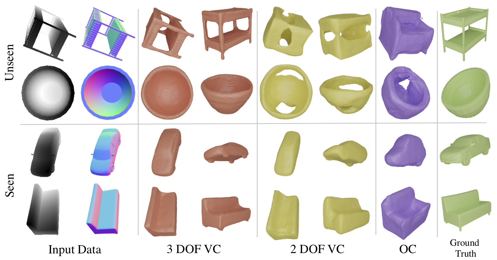
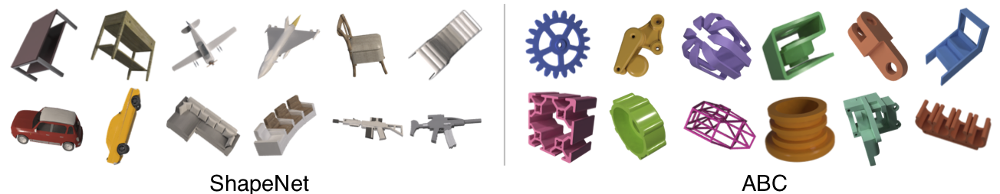
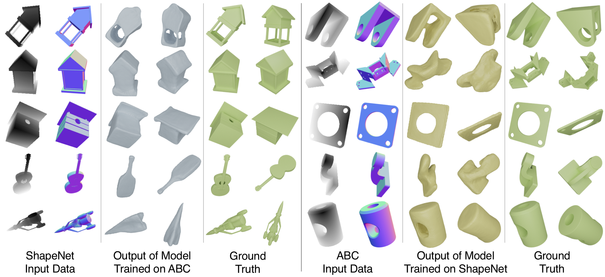

Abstract
A key challenge in single image 3D shape reconstruction is to ensure that deep models designed for single-view shape prediction can generalize to shapes which were not part of the training set. We find that such generalization to unseen categories of objects is a function of both architecture design and object pose representation during training. This paper introduces SDFNet, a novel shape prediction architecture and a training approach which supports effective generalization. We provide an extensive investigation of the factors that influence generalization accuracy and its measurement, ranging from the consistent use of 3D shape metrics to the choice of rendering parameters. We show that SDFNet provides state-of-the-art performance on seen and unseen shapes relative to existing baseline methods. We provide the first large-scale experimental evaluation of generalization performance on the complete ShapeNetCore.v2 dataset.
Generalizing to Seen and Unseen Shapes
Seen Category Reconstruction
Our proposed architecture SDFNet is able to successfuly reconstruct the shape from a single image of object shape categories seen during training as well as new, unseen object categories. For each input image, SDFNet predicts signed distance values (SDF) of points sampled in a 3D volume containing the object. Further, SDFNet is trained to predict SDF values in the same pose as the input image without requiring knowledge of camera parameters or object pose at test time.
Viewer Centered Training Affects Generalization

SDFnet trained with the object in viewer-centered (3 and 3 DOF VC) shows better reconstruction performance. Quantitative evaluation of 3 DOF VC shows high performance on both seen and unseen categories. Model is trained on ground truth depth and normal images.
We find that how the model represents the object pose during training and how much the object pose varies during training have a significant effect on generalization performance. Three distinct models are trained: object-centered (OC) where the model predicts the object shape in a canonical pose regardless of the object pose in the input image, two degree of freedom viewer-centered (2 DOF VC), where the object pose varies along azimuth and elevation during training and three degree of freedom viewer-centered (3 DOF VC), where the object tilt also varies. In the VC cases the model has to predict the object in the orientation corresponding to the input view. Seen categories are the biggest 13 ShapeNetCore.v2 categories, unseen are the remaining 42.
When evaluated on 3 DOF VC, the most difficult generalization task, our empirical findings show marginal decrease in performance between seen and unseen classes for the 3 DOF VC model. This is new evidence that it is possible to learn a general shape representation with correct depth estimation and 3 DOF VC training. The lower performance of OC and 2 DOF VC SDFNet, suggesting that these models perfom reconstruction in a recognition regime and fail to generalize.
Generalization Across Different Datasets

Sample images of our renders of the four most common ShapeNet categories and of objects from ABC. It is evident that the two datasets have different shape properties.
To further test the generalization ability of SDFNet, we train it one one shape dataset and test it on a significantly different shape dataset. Our findings show that when trained on ABC and tested on the 42 unseen categories of ShapeNet, 3 DOF VC SDFNet obtains comparable performance to SDFNet trained on the 13 ShapeNet categories. SDFNet trained on ShapeNet performs relatively worse when tested on ABC.

Qualitative comparison of models trained on ABC and tested on ShapeNet and vice-versa. Note the good reconstruction quality on the occluded part of the object.
Acknowledgements
Sed dignissim urna eget sapien facilisis, quis sodales justo tempus. Sed mattis, arcu ut aliquet suscipit, dolor augue tempor diam, nec viverra urna sem in sem. Nullam nisi magna, rhoncus nec lacus id, dapibus elementum quam. Proin at nibh non enim consectetur sodales eu at neque. Suspendisse viverra, enim eget hendrerit lobortis, arcu lacus semper nibh, at vehicula est sem et ante. Proin viverra velit non turpis porttitor mollis. Morbi ut velit maximus, aliquet nibh in, aliquam sapien. Vestibulum vitae lobortis urna.